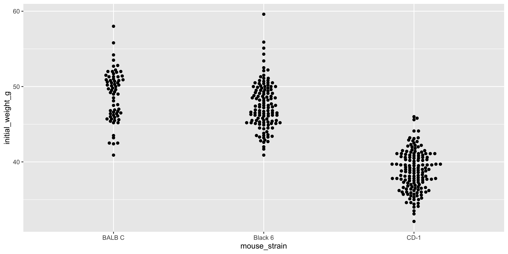
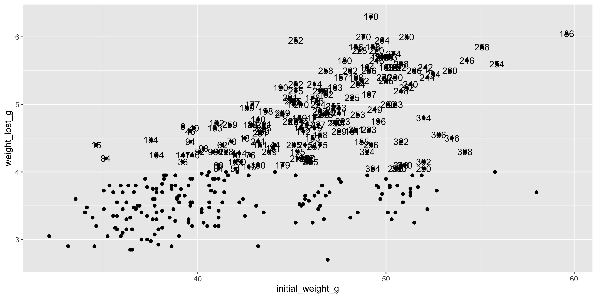
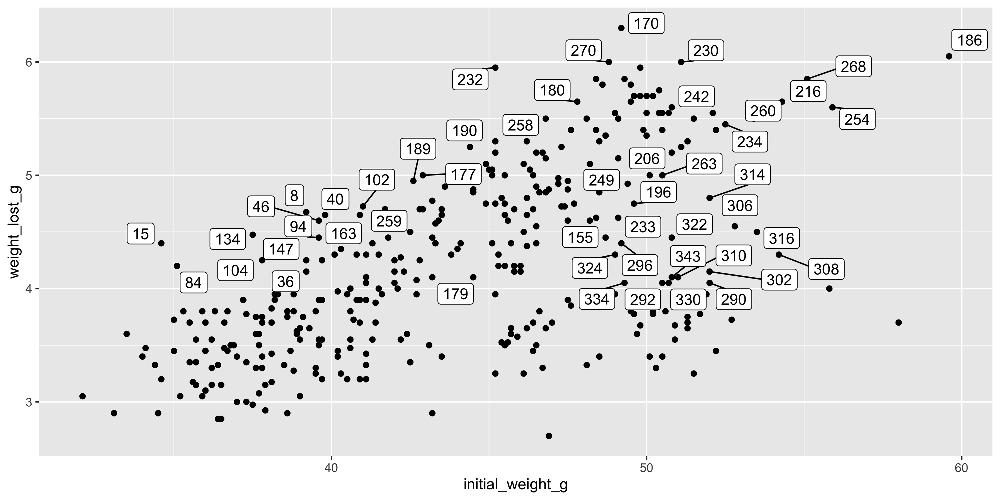

In workshop 4 (see Chapter 13), we covered the basics of building and customising plots with ggplot2. Here, we’ll introduce two additional packages that help you plot larger data without plots looking crowded: ggbeeswarm, for spreading out overlapping points, and ggrepel for labelling points without the labels overlapping.
This will serve as an example of how you can use packages that extend ggplot2 to help you with your plotting.
As before, let’s load the tidyverse package and read in the dosage data we’ve been using throughout this course:
library(tidyverse)
── Attaching core tidyverse packages ──────────────────────── tidyverse 2.0.0 ──
✔ dplyr 1.2.1 ✔ readr 2.2.0
✔ forcats 1.0.1 ✔ stringr 1.6.0
✔ ggplot2 4.0.3 ✔ tibble 3.3.1
✔ lubridate 1.9.5 ✔ tidyr 1.3.2
✔ purrr 1.2.2
── Conflicts ────────────────────────────────────────── tidyverse_conflicts() ──
✖ dplyr::filter() masks stats::filter()
✖ dplyr::lag() masks stats::lag()
ℹ Use the conflicted package (<http://conflicted.r-lib.org/>) to force all conflicts to become errors
Rows: 344 Columns: 9
── Column specification ────────────────────────────────────────────────────────
Delimiter: ","
chr (4): mouse_strain, cage_number, replicate, sex
dbl (5): weight_lost_g, drug_dose_g, tail_length_mm, initial_weight_g, id_num
ℹ Use `spec()` to retrieve the full column specification for this data.
ℹ Specify the column types or set `show_col_types = FALSE` to quiet this message.
We then need to install the ggbeeswarm and ggrepel packages we’ll use in this section:
In workshop 4 (see Chapter 13), we used position = position_jitter() to spread out overlapping points in a dot plot. Jittering works well, but because it adds random noise, the same data can look slightly different every time you run the code, and points can still end up overlapping by chance.
The ggbeeswarm package solves this with geom_beeswarm(), which uses an algorithm to arrange points so they don’t overlap, while keeping them centred on their true x position:
library(ggbeeswarm)ggplot(data = dosage, aes(x = mouse_strain, y = initial_weight_g)) +geom_beeswarm()

Compared to the jittered version, the beeswarm plot gives a much clearer sense of the actual shape of each strain’s distribution (a bit like a violin plot, as shown in Section 13.2.3), rather than a randomly scattered cloud:
Like geom_point(), geom_beeswarm() accepts the usual aesthetics, so you can colour points by another variable, e.g. geom_beeswarm(aes(colour = sex)). In general, packages that extend ggplot2 are designed to behave like its built-in geoms as much as possible
14.3 Labelling points with ggrepel
Sometimes you want to label individual points on a plot, for example, to flag which mice had an unusually large amount of weight loss. You could use geom_text() to do this, but with more than a couple of labels, they quickly start overlapping each other (and the points):
# label every mouse that lost more than 4gggplot(data = dosage, aes(x = initial_weight_g, y = weight_lost_g)) +geom_point() +geom_text(data =filter(dosage, weight_lost_g >4),aes(label = id_num))

Notice how the labels overlap one another and the points, making them hard to read. The ggrepel package provides a drop-in replacement, geom_text_repel(), which automatically nudges overlapping labels apart and draws a thin line back to the point they belong to:
Notice that we used filter() to only pass the mice we wanted to label into geom_text_repel(), rather than labelling every point in dosage. ggrepel can only do so much, and works best when it only has to arrange handful of labels, so choose the points you label carefully
There’s also a geom_label_repel() function, which draws a small box around each label (like geom_label() does), if you want the labels to stand out more clearly against a busy plot:
Warning: Removed 2 rows containing missing values or values outside the scale range
(`geom_point()`).

Source Code
---title: "Further Reading"toc: false---## Packages that extend ggplot2 {#sec-ggplot-further}In workshop 4 (see @sec-workshop04), we covered the basics of building and customising plots with `ggplot2`. Here, we'll introduce two additional packages that help you plot larger data without plots looking crowded: `ggbeeswarm`, for spreading out overlapping points, and `ggrepel` for labelling points without the labels overlapping.This will serve as an example of how you can use packages that extend ggplot2 to help you with your plotting.As before, let's load the `tidyverse` package and read in the `dosage` data we've been using throughout this course:```{r}library(tidyverse)dosage <-read_csv("data/mousezempic_dosage_data.csv")```We then need to install the `ggbeeswarm` and `ggrepel` packages we'll use in this section:```{r}#| eval: falseinstall.packages("ggbeeswarm")install.packages("ggrepel")```## Beeswarm plots with `ggbeeswarm`In workshop 4 (see @sec-workshop04), we used `position = position_jitter()` to spread out overlapping points in a dot plot. Jittering works well, but because it adds *random* noise, the same data can look slightly different every time you run the code, and points can still end up overlapping by chance.The `ggbeeswarm` package solves this with `geom_beeswarm()`, which uses an algorithm to arrange points so they don't overlap, while keeping them centred on their true x position:```{r}#| warning: falselibrary(ggbeeswarm)ggplot(data = dosage, aes(x = mouse_strain, y = initial_weight_g)) +geom_beeswarm()```Compared to the jittered version, the beeswarm plot gives a much clearer sense of the actual *shape* of each strain's distribution (a bit like a violin plot, as shown in @sec-box-violin), rather than a randomly scattered cloud:```{r}#| warning: falseggplot(data = dosage, aes(x = mouse_strain, y = initial_weight_g)) +geom_point(position =position_jitter(width =0.2))```::: {.callout-note title="Beeswarm plots and aesthetics"}Like `geom_point()`, `geom_beeswarm()` accepts the usual aesthetics, so you can colour points by another variable, e.g.`geom_beeswarm(aes(colour = sex))`. In general, packages that extend ggplot2 are designed to behave like its built-in geoms as much as possible:::## Labelling points with `ggrepel`Sometimes you want to label individual points on a plot, for example, to flag which mice had an unusually large amount of weight loss. You could use `geom_text()` to do this, but with more than a couple of labels, they quickly start overlapping each other (and the points):```{r}#| warning: false# label every mouse that lost more than 4gggplot(data = dosage, aes(x = initial_weight_g, y = weight_lost_g)) +geom_point() +geom_text(data =filter(dosage, weight_lost_g >4),aes(label = id_num))```Notice how the labels overlap one another and the points, making them hard to read. The `ggrepel` package provides a drop-in replacement,`geom_text_repel()`, which automatically nudges overlapping labels apart and draws a thin line back to the point they belong to:```{r}#| warning: falselibrary(ggrepel)ggplot(data = dosage, aes(x = initial_weight_g, y = weight_lost_g)) +geom_point() +geom_text_repel(data =filter(dosage, weight_lost_g >4),aes(label = id_num))```::: {.callout-note title="Only label what you need to"}Notice that we used `filter()` to only pass the mice we wanted to label into `geom_text_repel()`, rather than labelling every point in `dosage`. `ggrepel` can only do so much, and works best when it only has to arrange handful of labels, so choose the points you label carefully:::There's also a `geom_label_repel()` function, which draws a small box around each label (like `geom_label()` does), if you want the labels to stand out more clearly against a busy plot:```{r}ggplot(data = dosage, aes(x = initial_weight_g, y = weight_lost_g)) +geom_point() +geom_label_repel(data =filter(dosage, weight_lost_g >4),aes(label = id_num))```